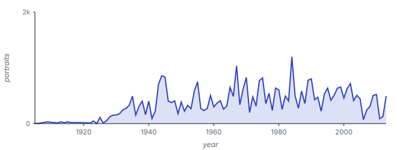
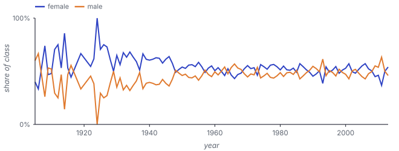

Yearbook
Yearbook
Frontal portraits, 1905–2013: covariate and concept drift, measured by accuracy.
YearbookYearbook is a collection of American high-school yearbook portraits. We use 37,921 frontal photos from to , each labelled male or female, with the two classes roughly balanced over time.
The target (the male/female label) is held fixed, so the temporal signal is dominated by covariate and concept drift: hairstyles, eyewear, framing, and photographic process drift steadily across the century, with the sharpest stylistic break around the mid-century decades. The benchmark asks whether a model trained on portraits up to one year still recognises portraits from later years.


a single binary label
104 yearly slices



Yearbook is evaluated with 21 models: twelve trained end to end from raw pixels (four families at three sizes) and nine frozen pretrained vision encoders, each fitted with a single linear head. The drift matrices report all 21 models across every training cutoff.